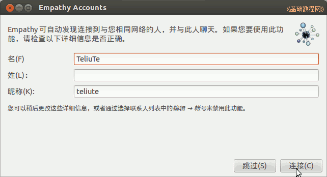
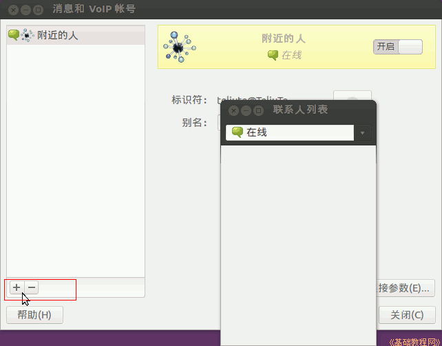
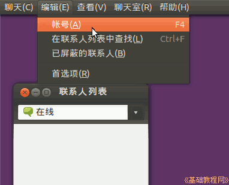
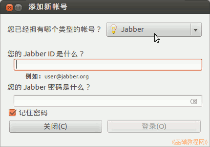
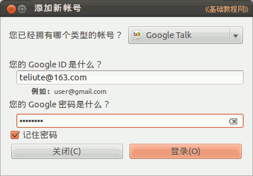
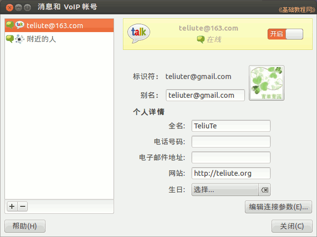
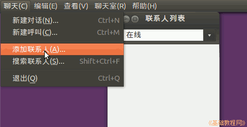
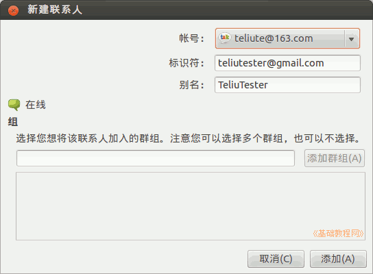
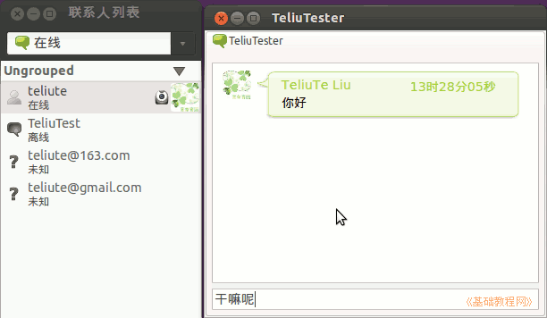

Ubuntu 入门操作指南
作者：TeliuTe 来源：基础教程网
四十七、Empathy 即时通讯程序 返回目录 下一课使用它，您可以登录各种即时信息聊天账号；
1、Empathy 即时通讯程序
1）点击主按钮，在搜索中输入 empathy ，打开程序，或者依次点“主按钮、所有程序、过滤结果、互联网、Empathy 即时通讯程序”；

2）第一次会出来搜索附近联系人面板，点“连接”即可，然后显示联系人列表窗口和账户管理窗口；

3）在大的“消息和 VoIP 账号”窗口中，点左下角的加号按钮“+”，或者点菜单“编辑－帐号”，添加一个自己的聊天账号；

4）出来一个添加账号对话框，点击右上角的“Jabber”帐号类型下拉列表；

5）在出来的帐号类型中选择“Google Talk”，输入自己的 Google 帐号、密码，点“登录”；

6）正确完成后，显示之个帐号的详细资料，自己可以进行修改；

7）点菜单“聊天－添加联系人”，可以添加别人到自己的联系人列表中，相当于添加好友；

8）从上到下依次选择自己的帐号、输入对方的账号或邮箱，如果是Google Talk 会自动搜索到对方；

9）在联系人窗口列表中，双击一个帐号，就可以开始跟他聊天对话，输入内容后按回车键发送；

本节学习了Empathy 即时通讯程序的基础知识，如果你成功地完成了练习，请继续学习下一课内容；
本教程由86团学校TeliuTe制作|著作权所有
基础教程网：http://teliute.org/
美丽的校园……
转载和引用本站内容，请保留版权信息和本站链接。